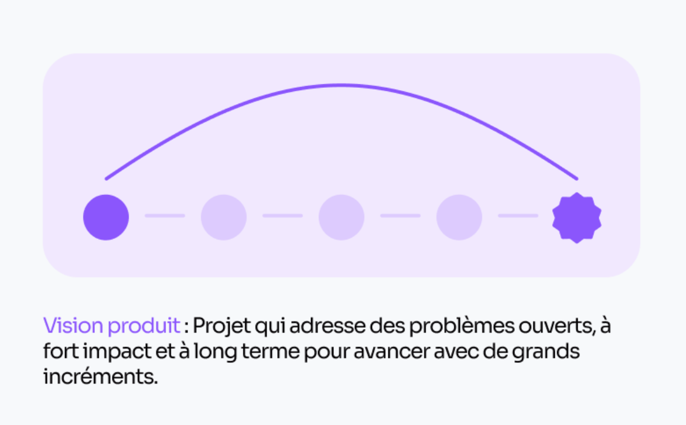

Chapitre 1 : Lancement du Projet - Préparation et Vision

La première étape de la méthode SCRUM consiste à lancer le projet en clarifiant sa vision et en posant les bases de l’organisation. Cela commence par la définition d’une vision claire du produit, qui décrit simplement les objectifs à atteindre et la valeur apportée aux utilisateurs finaux. Cette vision constitue une sorte de boussole pour guider toutes les décisions du projet. Le Product Owner, acteur central de cette phase, est responsable de recueillir les besoins des parties prenantes et de synthétiser une vision partagée par l’équipe.
Ensuite, l’équipe SCRUM est constituée. Trois rôles clés y coexistent : le Product Owner, le SCRUM Master et l’équipe de développement. Le SCRUM Master veille à ce que la méthodologie SCRUM soit respectée comme une sorte de coach qui cherche aussi l’équipe à améliorer son workflow. L’équipe de développement, composée de professionnels multidisciplinaires, se charge de créer les livrables du projet. Une collaboration claire entre ces acteurs est essentielle pour poser des bases solides.
Enfin, un backlog produit initial est élaboré. Ce document, structurant pour le projet, liste et priorise les fonctionnalités sous forme de user stories. Ces user stories traduisent les besoins des utilisateurs en éléments concrets que l’équipe devra développer. En tant qu’outil dynamique, le backlog produit est appelé à évoluer tout au long du projet. Cette étape initiale est fondamentale pour garantir une vision partagée et aligner les efforts de l’équipe.